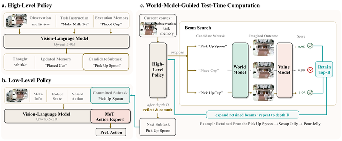
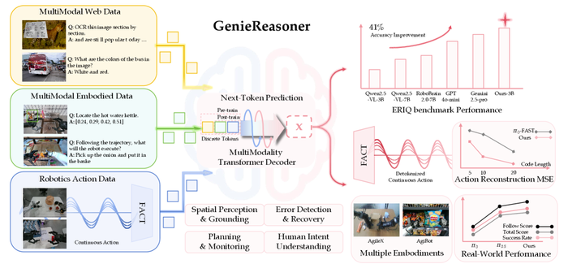
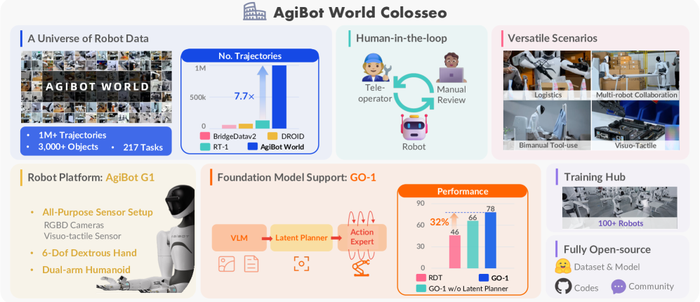
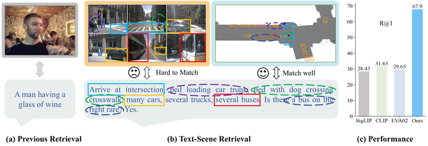
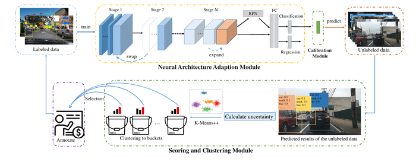
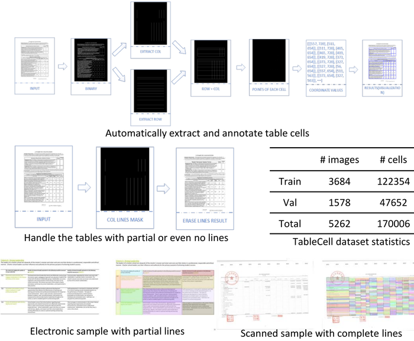

Dafeng Wei
Researcher · AgiBot (智元机器人)
I work on Vision-Language Models (VLM) and Vision-Language-Action models (VLA) for embodied AI — teaching robots to reason about the world and act in it.
Previously, I was a senior algorithm engineer on the autonomous driving team at Li Auto, where I was a core contributor to DriveVLM — an industry-first dual-system ("fast–slow") autonomous driving solution and the first of its kind deployed at scale on production vehicles — and built the multimodal retrieval systems powering the data loop. Before that I was an algorithm engineer at ByteDance. I received my M.S. from Shanghai Jiao Tong University, advised by Prof. Hongtao Lu.
News
- Jul 2026 We released τ0-VLA — a hierarchical robot foundation model with world-model-guided test-time computation.
- Dec 2025 GenieReasoner is released — unified embodied VLM reasoning with robotic action.
- Oct 2025 AgiBot World Colosseo was selected as a Best Paper Award Finalist at IROS 2025 🏆.
- Mar 2025 We released AgiBot World — 1M+ robot manipulation trajectories, fully open-sourced.
- Dec 2024 BEV-TSR was accepted to AAAI 2025.
- Dec 2024 I joined AgiBot, working on VLM & VLA.
Publications
* denotes equal contribution. Also see my Google Scholar profile.
2026

τ0-VLA: a Hierarchical Robot Foundation Model with World-Model-Guided Test-Time Computation
Technical report, 2026
A hierarchical robot foundation model: the high-level planner performs world-model-guided beam search over subtasks with error-correcting execution memory, driving a cross-embodiment VLA — lifting success on up-to-12-minute real-robot tasks from 27.5% to 45.0%.
Core contributor — built the AgibotVLA training framework from scratch, ran the initial VLA pre-training, and developed the high-level VLM planner end-to-end: task formulation, data construction, training, and evaluation.
2025

Unified Embodied VLM Reasoning with Robotic Action via Autoregressive Discretized Pre-training
arXiv preprint, 2025
GenieReasoner jointly optimizes embodied reasoning and action execution, with the ERIQ reasoning benchmark (6k+ QA pairs) and FACT, a flow-matching action tokenizer.

IROS 2025 🏆 Best Paper Award Finalist · IEEE T-RO 2026
An open platform with 1M+ real-robot trajectories across 217 tasks, and GO-1, a generalist policy built on latent action representations.

BEV-TSR: Text-Scene Retrieval in BEV Space for Autonomous Driving
AAAI 2025
Retrieving complex driving scenes with free-form text queries directly in BEV feature space.
2022
Efficient Dual Attention SlowFast Networks for Video Action Recognition
Computer Vision and Image Understanding (CVIU), 2022
Lightweight two-stream video networks with a cross-modality dual attention fusion module (CMDA).
2021

Towards Dynamic and Scalable Active Learning with Neural Architecture Adaption for Object Detection
BMVC 2021
Active learning for object detection that adapts network architecture as the labeled pool grows; deployed on large-scale autonomous-driving data at Huawei.
2020

Image-based Table Cell Detection: a Novel Table Structure Decomposition Method with New Dataset
ICPR 2020
Detecting table cells as objects to recover table structure, with TableCell — an open dataset of 170K cell-level annotations.
Experience
-
2024.12 – Present
AgiBot (智元机器人) — Researcher
Vision-Language Models & Vision-Language-Action models for embodied AI. -
2023.04 – 2024.12
Li Auto (理想汽车) — Senior Algorithm Engineer, Autonomous Driving
Core contributor to DriveVLM — industry-first dual-system autonomous driving, deployed at scale on production vehicles; multimodal image/video retrieval for the data loop. -
2021.04 – 2023.04
ByteDance (字节跳动) — Algorithm Engineer, TikTok Data & EDU
Multimodal video quality modeling for TikTok; document layout analysis for education products.
Internships
-
2020.10 – 2021.03
Huawei Noah's Ark Lab (华为诺亚研究院) — Research Intern, Computer Vision
Active learning for object detection on large-scale autonomous-driving data (BMVC 2021). -
2020.04 – 2020.09
Hikvision Research Institute (海康威视研究院) — Algorithm Intern, Deep Learning
Research on efficient, lightweight video action recognition networks (CVIU 2022), applied in production to driver behavior analysis.
Education
-
2018.09 – 2021.03
Shanghai Jiao Tong University — M.S. in Computer Technology
Advisor: Prof. Hongtao Lu. Thesis: efficient deep learning for video action recognition.
Miscellaneous
- 🧩 I built ArxivPilot, a Chrome extension that adds reading aids to arXiv papers — give it a try if you read a lot of papers.
- 🔌 I built StepFunMCP, an MCP server for StepFun (阶跃星辰) chat / vision / image-generation / speech models — on PyPI as
stepfun-mcp. - 🤖 In my spare time I closely follow progress on AGI and autonomous agents.
- ❤️ Certified in CPR & First Aid by the American Heart Association (AHA) — always ready to help.